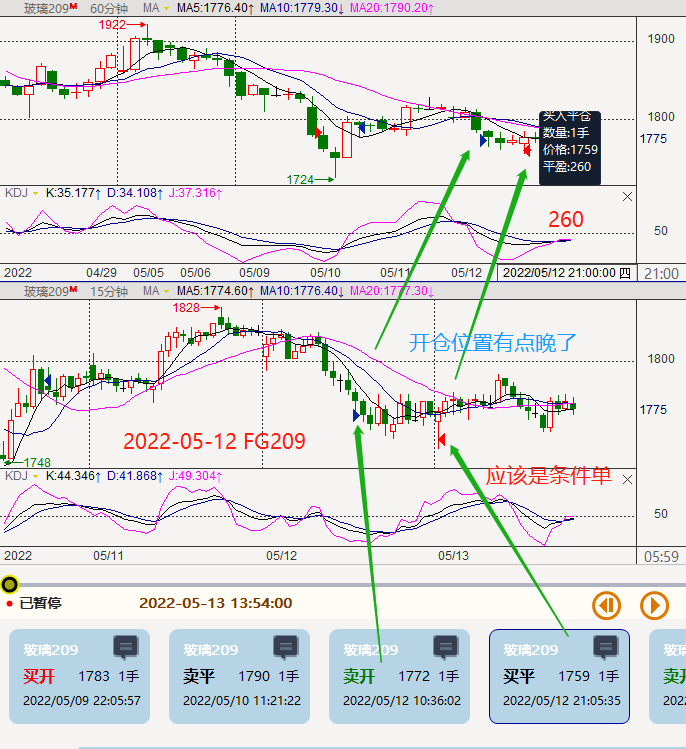
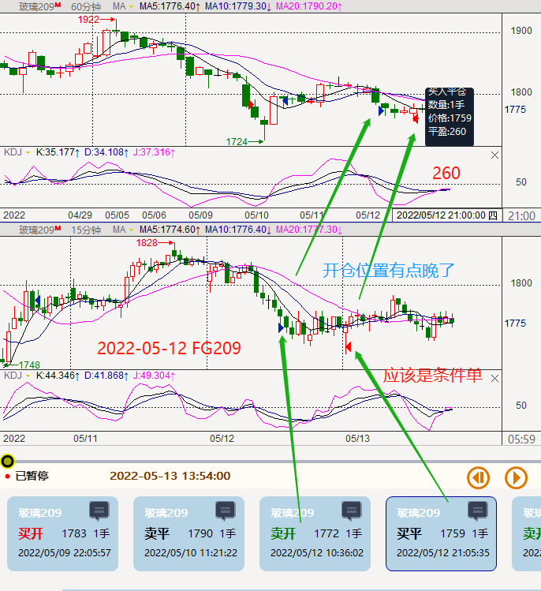
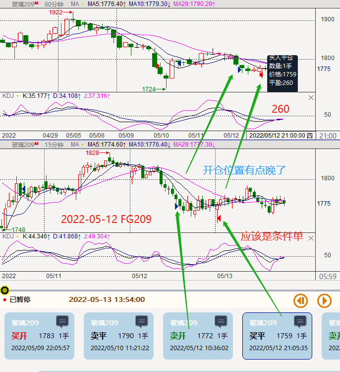

上次记录至2022-07-23(星期六)，本次记录从2022-07-25开始算起，
磨其心智 --- 2022/08/20
磨其心智 --- 2022/08/20
本段时间达至7W,取出1w,算是心心念念的完成了,come on 于2022-08-20 18::02（终于，（好的直觉是靠犯错误换来的））
 2022-07-25至2022-08-20主要涉及到的品种有：
乙二醇eg2209 : 50
玉米c2209: 10
玻璃2209: 160 - 2160 = -2000
玻璃2301 : 40 + 160 = 200
纯碱2210 : 220 + 300 + 40 +（下次20220802开始）+400+500+60+120+260（到此处）-240+300+40（20220818 22:08）
豆粕:
2209: 100 + 10 +70 = 180 20220726-0728-m2209
2211: 270 20220804-m2211
2212: 20 20220803-m2212
2301: 80 + 210 20220815-0819-m2301
剩余： 0804 的空（中间0815-0819的多单已计算）
PP :
2209：35 + 5 + 45 20220726-0727-pp2209 440 -215 + 40 20220729-0801-pp2209 (已至0801，下次0802) 160 + 10 20220802-pp2209 20 20220804-0805-pp2209
2210：40 + 330 20220804-0805-pp2210 + 20 +90 20220808-0809-pp2210 + 0 +5 20220811-0812-pp2210 +5 20220812-0815-pp2210 +5 20220818-pp2210
2301：15 + 10 = 25 20220818-pp2301
合计：
2022-07-25至2022-08-20主要涉及到的品种有：
乙二醇eg2209 : 50
玉米c2209: 10
玻璃2209: 160 - 2160 = -2000
玻璃2301 : 40 + 160 = 200
纯碱2210 : 220 + 300 + 40 +（下次20220802开始）+400+500+60+120+260（到此处）-240+300+40（20220818 22:08）
豆粕:
2209: 100 + 10 +70 = 180 20220726-0728-m2209
2211: 270 20220804-m2211
2212: 20 20220803-m2212
2301: 80 + 210 20220815-0819-m2301
剩余： 0804 的空（中间0815-0819的多单已计算）
PP :
2209：35 + 5 + 45 20220726-0727-pp2209 440 -215 + 40 20220729-0801-pp2209 (已至0801，下次0802) 160 + 10 20220802-pp2209 20 20220804-0805-pp2209
2210：40 + 330 20220804-0805-pp2210 + 20 +90 20220808-0809-pp2210 + 0 +5 20220811-0812-pp2210 +5 20220812-0815-pp2210 +5 20220818-pp2210
2301：15 + 10 = 25 20220818-pp2301
合计：
七月主要交易品种为：pp2209、玻璃FG2209、豆粕m2209
聚丙烯pp2209


玻璃FG2209 至2022-06-30
 




豆粕m2209
其他少量交易品种有：螺纹rb2210、 纯碱sa2209、 菜粕rm2209
螺纹rb2210:
纯碱sa2209:
菜粕rm2209: